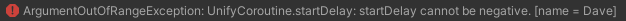

Delayed Start of a Unify Coroutine
A Unify Coroutine has a startDelay property to allow delaying execution from when the Start() method is called.
The startDelay property can be set in two ways:
Pass startDelay as a parameter to the constructor:
UnifyCoroutine myUnifyCoroutine = new UnifyCoroutine(PrintEverySecond(), startDelay: 2.5f); // 2.5 seconds
IEnumerator SayHello()
{
print("Hello, Unify!");
yield return null;
}
Set the startDelay property directly:
myUnifyCoroutine.startDelay = 2.5f; // 2.5 seconds
Example
This Unify Coroutine has a startDelay of 5 seconds and then prints the string "Hello, Unify!", one letter at a time to the Unity Console at 1 second intervals.
The name property has been set to 'Dave' to demonstrate how Unify Coroutine instances are identified in exception messages and failSilently has been set to false to allow exceptions to be triggered, as described below.
Attach the script below to a GameObject and press:
- S to Start
using System.Collections;
using Unify.Coroutines;
using UnityEngine;
public class DelayedStart : MonoBehaviour
{
private UnifyCoroutine myUnifyCoroutine;
void Start()
{
myUnifyCoroutine = new UnifyCoroutine(SayHello(), startDelay: 5f, name: "Dave") { failSilently = false };
print("press S to START");
}
void Update()
{
if (Input.GetKeyUp(KeyCode.S))
{
print("starting Unify Coroutine in 5 seconds...");
myUnifyCoroutine.Start();
}
}
IEnumerator SayHello()
{
string hello = "Hello, Unify!";
for (int i = 0; i < hello.Length; i++)
{
print(hello[i]);
yield return new WaitForSecondsRealtime(1f);
}
}
}
Exceptions
Exceptions will always be thrown under the following circumstances:
- Passing a null value to the target parameter
- Passing a value of less than 0 to the startDelay parameter
Exceptions will be thrown under the following circumstances, only if failSilently is false:
Unify will provide information in the exception message to help you find the cause of the error, for example:

This message tells us the exception was caused by setting the startDelay property to a negative value, and that 'Dave' was the name of the offending Unify Coroutine instance.